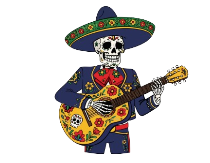
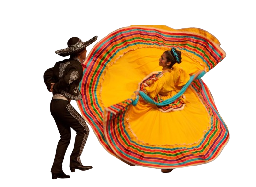
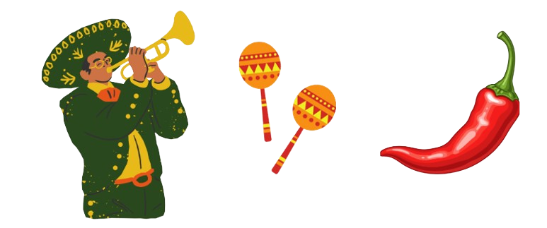

Cultura
Tradições: o povo mexicano valoriza muito as festas populares, como o Dia dos Mortos, onde se homenageiam os antepassados com flores, comidas e altares coloridos.
Arte: artistas como Frida Kahlo e Diego Rivera são símbolos da arte mexicana.
Música e dança: estilos como mariachi, ranchera e cumbia mexicana mostram a alegria e o orgulho do país.
Religião: a maioria da população é católica, e celebrações religiosas fazem parte do dia a dia.
Símbolos: o sombrero, o cacto, a bandeira colorida e o mariachi representam o espírito mexicano.
